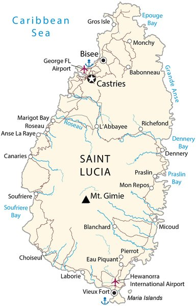
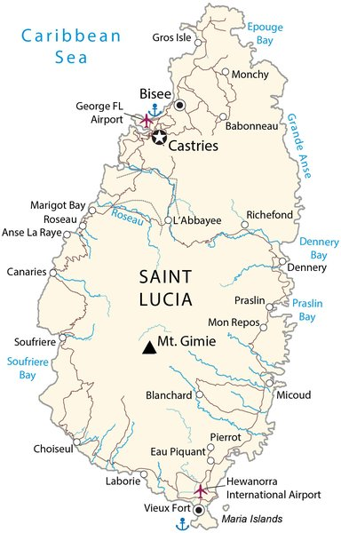
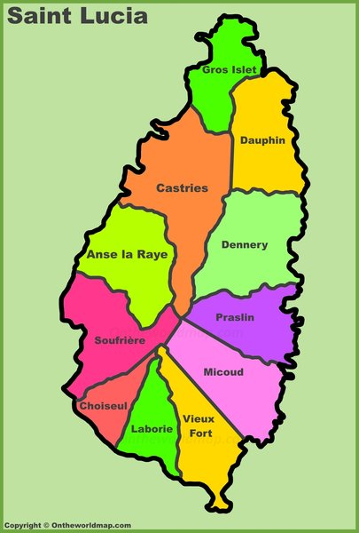
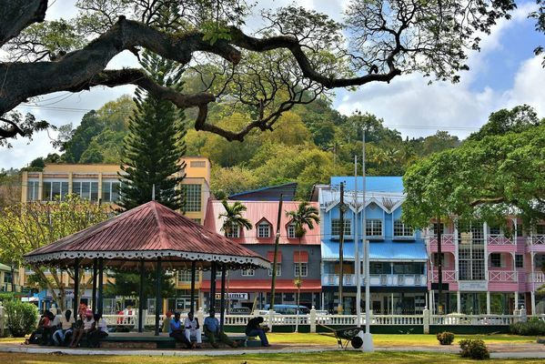
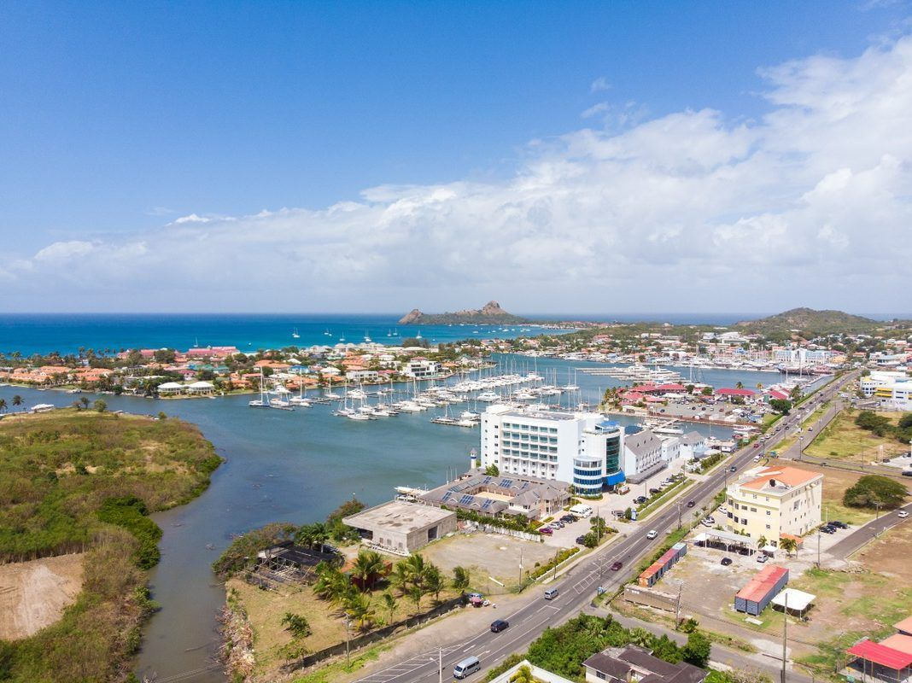
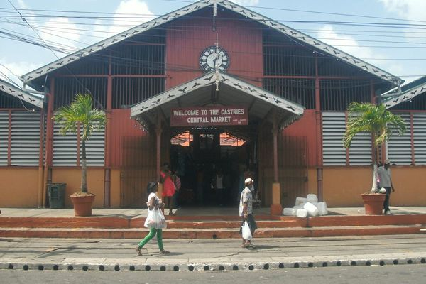

Geography & Climate
 

Saint Lucia is a volcanic island in the eastern Caribbean Sea, part of the Lesser Antilles. It lies between Martinique (to the north) and Saint Vincent (to the south), with the Atlantic Ocean on the east and the Caribbean Sea on the west.
| Total Area | 617 km² (238 sq mi) |
| Length | 43 km (27 mi) north to south |
| Width | 23 km (14 mi) at widest point |
| Highest Point | Mount Gimie, 950m (3,117 ft) |
| Iconic Landmarks | The Pitons (Gros Piton 770m, Petit Piton 743m) - UNESCO World Heritage Site |
| Coastline | 158 km |
| Coordinates | 13.9094° N, 60.9789° W |
Climate
Tropical maritime climate with two main seasons:
- Dry season (January-June): Avg. temp 24-31°C (75-88°F), lower humidity
- Wet/Hurricane season (July-December): Avg. temp 25-32°C (77-90°F), higher rainfall
- Average annual rainfall: 1,300mm (coast) to 3,400mm (interior mountains)
- Hurricane season peaks August-October
Government & Administration
Saint Lucia is a parliamentary democracy and constitutional monarchy within the Commonwealth of Nations. The British monarch (represented by the Governor-General) is the head of state.
December 2025 General Election
In the general election held in December 2025, the ruling Saint Lucia Labour Party (SLP) secured a commanding 14 of 17 seats in the House of Assembly, returning Prime Minister Philip J. Pierre for a second term. The opposition United Workers Party (UWP) won the remaining 3 seats. The decisive victory gives the Pierre government a strong mandate to continue its economic agenda, including the Hewanorra Airport redevelopment, Sovereign Wealth Fund, and renewable energy transition.
Structure
| Head of State | British Monarch, represented by Governor-General |
| Head of Government | Prime Minister Philip J. Pierre (SLP; re-elected December 2025, 14/17 seats) |
| Legislature | Bicameral Parliament: Senate (11 members, appointed) & House of Assembly (17 elected) |
| Judiciary | Eastern Caribbean Supreme Court (shared with OECS states), with final appeal to the Caribbean Court of Justice (CCJ) since July 2023 |
| Legal System | English common law |
| Elections | General elections held every 5 years (last: December 2025; next due by ~2030) |
Key Ministries for Business
- Ministry of Finance, Economic Development & the Youth Economy - Fiscal policy, tax, budget
- Ministry of Commerce, Manufacturing, Business Development, Cooperatives & Consumer Affairs - Business regulation, trade
- Ministry of Tourism, Investment, Creative Industries, Culture & Information - Tourism, investment promotion
- Ministry of Agriculture, Fisheries, Food Security & Rural Development - Agricultural policy
- Ministry of Infrastructure, Ports, Transport, Physical Development & Urban Renewal - Infrastructure, planning
- Attorney General's Chambers - Companies registry, legal affairs
Administrative Districts
St. Lucia is divided into 10 districts (historically called "quarters"), dating from the French colonial period:
Castries
Capital city, main commercial center, primary port
Gros Islet
Tourism hub, Rodney Bay, major hotels
Vieux Fort
Hewanorra Int'l Airport, southern business
Soufriere
The Pitons, sulphur springs, eco-tourism
Dennery
East coast, fishing, agriculture
Micoud
Eastern district, farming communities
Choiseul
Southern district, arts & crafts heritage
Laborie
Southern fishing village, authentic culture
Anse la Raye
West coast, fishing, Friday fish fry
Canaries
Smallest district, between Anse la Raye & Soufriere
Economy
| Nominal GDP (2024) | ~US$2.55 billion (EC$6,951M; IMF 2025 Art. IV) |
| GDP per Capita (2024) | ~USD $14,323 |
| GDP Growth (2024) | 4.7% (IMF est.) |
| GDP Growth Forecast (2025) | 1.7% (IMF proj.) — sharp deceleration from tourism weakness, offset by construction |
| GDP Growth Forecast (2026) | 2.3% rebound expected; medium-term convergence to 1.5% potential |
| Inflation (2024) | -0.5% (deflation year) |
| Inflation (2025 proj.) | 0.8% |
| Public Debt | 76.7% of GDP (2024); stabilizing with primary surpluses for 3 consecutive years |
| Unemployment (2024) | 10.8% (historic low); Q2 2025: 13.4% (seasonal uptick) |
| Youth Unemployment | ~29% (structural challenge) |
| FDI (2024) | EC$505.7 million (67% of total investment) |
| Credit Growth (2024) | 5.6% (highest in 15 years); moderating to 4.2% (2025) / 3.1% (2026) |
| Currency | Eastern Caribbean Dollar (XCD), pegged at XCD 2.70 = USD 1.00 |
| Main Export Partners | US, UK, Trinidad & Tobago, Barbados, Dominica |
| Main Import Partners | US, Trinidad & Tobago, UK, Japan |
Economic Structure
- Services/Tourism: ~65% of GDP. Over 1.15 million visitors in 2024 (record). Main source of foreign exchange and employment.
- Agriculture: ~3% of GDP but 20% of employment. Key crops: bananas, cocoa, coconut, mangoes, avocados.
- Manufacturing: Light manufacturing including food processing, beverages, electronics assembly, and clothing.
- Financial Services: Growing offshore banking and international business company sector.
- Construction: Significant sector driven by tourism infrastructure and government projects.
Key Economic Challenges
Vulnerability to hurricanes and climate events. Over-reliance on tourism. High public debt (76.7% of GDP). Limited natural resources. Small domestic market. High energy costs (imported petroleum-based). Youth unemployment at ~29% despite headline rate falling to 10.8% in 2024. Water security increasingly strained by climate change.
Recent Economic Performance
Saint Lucia has made a strong post-pandemic recovery, with real GDP surging 20.6% in 2022 before moderating to steadier growth in subsequent years. The IMF's 2025 Article IV consultation (concluded January 2026) confirms that the economy expanded 4.7% in 2024 to approximately US$2.55 billion (EC$6,951M), driven by robust U.S. tourism arrivals and active construction activity. Growth is projected to slow to 1.7% in 2025 due to weaker tourism from the UK and Canada (stayover arrivals fell 3% y/y in Jan-Apr 2025; UK -15%, Canada -19%), before recovering to 2.3% in 2026 as tourism picks up and infrastructure projects advance. Over the medium term, growth is expected to converge to its potential rate of 1.5%. Unemployment fell to a historic low of 10.8% in 2024 but rebounded to 13.4% in Q2 2025 as temporary hotel closures and reduced airlift weighed on the services sector; youth unemployment remains stubbornly high at approximately 29%. Inflation turned negative (-0.5%) in 2024 and is projected to rise modestly to 0.8% in 2025 before converging to 2% over the medium term. Public debt declined to 76.7% of GDP in 2024, down from pandemic highs of ~83% in 2022. Foreign direct investment reached EC$505.7 million in 2024, accounting for 67% of total investment. Fiscal performance has strengthened with three consecutive years of primary surpluses, and the government unveiled its largest-ever budget of EC$2.06 billion for FY 2025/26. The SLP's decisive victory in the December 2025 general election (14/17 seats) provides political continuity for the current economic programme. In February 2025, the Cabinet approved the creation of the Sovereign Wealth Fund of Saint Lucia, financed by CBI proceeds, to support sustainable development and climate resilience.
Key Economic Indicators
| Indicator | 2022 | 2023 | 2024 | 2025 (proj.) | 2026 (proj.) |
|---|---|---|---|---|---|
| Real GDP Growth | 20.6% | 3.3% | 4.7% | 1.7% | 2.3% |
| Inflation (CPI) | 6.4% | 4.5% | -0.5% | 0.8% | 1.5–2.0% |
| Unemployment Rate | 16.5% | 14.0% | 10.8% | 13.4% (Q2) | — |
| Youth Unemployment | — | — | ~29% | — | — |
| Public Debt (% of GDP) | ~83% | ~79% | 76.7% | 77.2% | ~77% |
| Current Account (% of GDP) | — | — | -2.5% | -3.6% | — |
| FDI (% of GDP) | — | — | 7.3% | 7.0% | — |
Sources: IMF 2025 Article IV Consultation (concluded Jan 2026, press release PR/26/03), World Bank, ECCB. Projections are IMF staff estimates. Nominal GDP 2024: ~US$2.55B (EC$6,951M); per capita US$14,323. FDI: EC$505.7M (67% of total investment).
Credit Rating
CariCRIS (Caribbean Information and Credit Rating Services) rates Saint Lucia at CariBBB- on its regional scale, with a stable outlook. This adequate-creditworthiness rating reflects the country's moderate debt burden and vulnerability to external shocks. Key factors for a potential upgrade include reducing the debt-to-GDP ratio below 65% and sustaining GDP growth of 3% or more per annum.
Fiscal Policy Developments
- Primary surplus streak: Three consecutive years of primary surpluses through 2024 (1.5% of GDP in 2024), signaling improved fiscal discipline.
- Record budget: The 2025/26 budget totals EC$2.06 billion, with EC$325.6 million in capital expenditure, of which EC$122.8 million is earmarked for infrastructure.
- Sovereign Wealth Fund: In February 2025, the Cabinet formally approved creation of the Sovereign Wealth Fund of Saint Lucia, financed by CBI proceeds. Objectives include intergenerational wealth preservation, climate adaptation, and sustainable economic development. The fund will follow ESG investment principles and be governed by an independent board. Legislation was targeted for Q1 2025 parliamentary approval.
- Debt target challenge: Under current policies, public debt (~77% of GDP) is projected to stabilize but will fall short of the ECCU regional target of 60% of GDP by 2035. The IMF recommends comprehensive tax reform, expenditure controls, and a fiscal responsibility framework.
Major Infrastructure & Investment Projects
| Project | Value | Status / Timeline |
|---|---|---|
| Hewanorra International Airport Redevelopment | USD $175 million | ATC tower under construction. Contractor bidding closed Oct 2025; main terminal construction Q1 2026, completion ~2029. New terminal (1.2M passenger capacity), parallel taxiway, 5 jet bridges. Designed to accommodate A380-class aircraft. Project manager: Turner & Townsend Heery. |
| St. Jude Hospital Reconstruction | USD $75 million (Saudi Fund for Development loan) | Completed and handed over to government in November 2025 after 16 years. Features expanded emergency dept, CT scan, molecular lab, and blood bank. |
| Millennium Highway & West Coast Road | US$43.3 million total (UKCIF + CDB) | Lot 1: 96% complete. Lot 2B: 53% complete. Lot 2A: completion Q1 2026. Rehabilitation of 40 km improving all-weather access between Castries and Vieux Fort. |
| Secrets St. Lucia Resort & Spa | — | 355-room adults-only all-inclusive (Hyatt Inclusive Collection) at Choc Beach. Opened June 2025. Former St. James Club Morgan Bay site. |
| Courtyard Marriott, Pointe Seraphine | — | 140-room hotel near Castries cruise port; under construction, expected 2026. |
| Cabot Saint Lucia | — | 375-acre luxury golf & residential community, Cap Estate. Point Hardy Golf Club open since Dec 2023 (ranked #76 globally). 320 homes planned; Horizon Villas ($5.6M+) completing 2025–26. Clubhouse with bowling/simulators expected 2026. 40-suite boutique hotel. |
| Sapphire Sands Villas | — | Luxury villa retreat on Reduit Beach (Bay Gardens); 27 keys with spa, butler service. Opening February 2026. |
| Canelles Micoud Luxury Hotels | — | Two all-inclusive hotels with 250 rooms and 380 residences; construction ongoing. |
| Choc Bridge Construction | EC$8.2 million | Allocated in FY 2025/26 budget. |
| Gros Islet Highway Upgrade | — | Expected Q1 2026. Improvements to the main Castries–Gros Islet corridor serving the tourism-heavy northern strip. |
| World Bank Flood Resilience Project | USD $25 million | Approved in Oct 2025; targets Castries and Anse La Raye river basins, benefiting ~67,000 residents. |
FDI & Investment Climate
Nominal GDP reached approximately US$2.55 billion (EC$6,951M) in 2024, with GDP per capita of US$14,323. Foreign direct investment totalled EC$505.7 million in 2024, representing 67% of total investment and approximately 7.3% of GDP. FDI was primarily channeled into tourism infrastructure, real estate, and the Citizenship by Investment (CBI) programme. FDI had surged 320% in 2023 (to ~USD $140 million), driven by hotel construction and CBI-linked projects. The government's Invest Saint Lucia agency actively targets FDI in tourism, infrastructure, ICT, and renewable energy. Private-sector credit growth hit 5.6% in real terms in 2024 — the highest rate in fifteen years — driven by commercial real estate lending (7.4% of total loans by Q1 2025). The ECCB assessed Saint Lucia's commercial banking sector as stable at end-2024, with total bank assets of USD $3.46 billion. External debt stood at 68.7% of GDP in 2024.
Economic Outlook Summary
The IMF projects medium-term growth settling at 1.5–1.8% once current infrastructure and hotel investment cycles approach completion. Risks are tilted to the downside, including geopolitical tensions, trade uncertainty, potential weakening of tourism demand, and ever-present natural disaster exposure. On the upside, completion of the airport redevelopment and new hotel capacity could materially boost tourism receipts and employment beyond current projections.
Diaspora & Remittances
An estimated 71,200 Saint Lucians live abroad, representing 38.8% of the resident population (2020 data). Pre-1965 emigrants favored the UK; since then, 70%+ have chosen the USA. The diaspora drives significant remittance flows and return-migration investment in housing and small businesses.
Diaspora Distribution
| Location | Population | Key Communities |
|---|---|---|
| United States | 25,244 | Brooklyn, Bronx, South Florida |
| United Kingdom | 12,308 born + 30,000+ heritage | London, broader UK |
| Canada | Several thousand | Primarily education/employment |
Remittance Flows
| Remittances (2024) | US$64.96 million (~2.5% of GDP) |
| Remittances (2023) | US$63.29 million |
| Growth | ~2.6% year-on-year |
| Caribbean average | ~7% of GDP (SLU is well below average) |
| Channels | Western Union, MoneyGram (10+ Massy Finance locations), bank transfers |
| Global avg. send cost | 6.4% (UN target: 3%) |
Source: World Bank Remittance Data, Embassy of SLU.
Key Diaspora Policies & Programmes
- 2024 Citizenship Amendment (landmark): Parliament granted citizenship to 2nd and 3rd generation Saint Lucian descendants born overseas. Children and grandchildren of SLU citizens can now inherit birthright citizenship.
- LucianLinks Diaspora Programme: Free membership for SLU-born citizens and those with parents/grandparents born in SLU. Offers up to 60% savings on accommodation and discounts on excursions.
- Planned Diaspora Bill (Sept 2024): SLU nationals abroad 10+ years can bring items duty-free on return.
- Diaspora Affairs Unit: Operates within the Ministry of External Affairs to coordinate diaspora engagement.
- USLOA (Union of SLU Overseas Associations, founded 1988): Umbrella body with member associations in South Florida, Central Florida, Houston, Georgia, DC, and UK.
Return Migration & Investment
Diaspora return migration has fueled an island-wide housing boom since the 1990s. Returnees invest primarily in residential homes and small businesses, contributing to a labor shift from agriculture to construction and services. The Sovereign Wealth Fund (approved Feb 2025) represents a new mechanism to channel CBI proceeds into sustainable development, potentially creating new investment opportunities for diaspora participants.
Demographics
| Population (2022 Census) | 172,948 residents (up from 166,526 in 2010, +3.9%) |
| Population (2025 est.) | 180,149 |
| Population Density | 721 people/sq mi (280/km²) |
| Median Age | 35.7 years |
| Average Household Size | 2.6 persons |
| Total Fertility Rate | 1.4 (below replacement level of 2.1) |
| Official Language | English |
| Creole Language | Saint Lucian Creole French (Kweyol) — widely spoken |
| Literacy Rate | ~91% |
| Religion | Predominantly Christian (Roman Catholic ~60%, Protestant ~25%) |
| Urbanization | ~19% urban (Castries metro area) |
| Life Expectancy | ~76 years |
| Labor Force | ~90,000 |
Education Highlights
| CSEC Pass Rate (2025) | 78.05% — highest in 5 years |
| TVET Expansion | 4 secondary schools converted to dedicated TVET centres, expanding vocational training capacity |
| Youth Unemployment | ~29% (structural skills mismatch remains a challenge despite improved CSEC outcomes) |
| Tertiary Education | Sir Arthur Lewis Community College (SALCC), UWI Open Campus, Monroe College (scholarship programme) |
2022 Census: District Population Trends
Castries remains the most populated district but shows a declining trend in its share of the national population. The fastest-growing districts are Gros Islet (driven by tourism development and new residential construction), Vieux Fort (airport proximity and industrial activity), Laborie, and Choiseul. The low total fertility rate (1.4) and ageing population (median age 35.7) suggest St. Lucia is entering a demographic transition that will increasingly constrain its labor force over the coming decades.
Infrastructure
Airports
| Airport | Code | Location | Runway | Role |
|---|---|---|---|---|
| Hewanorra International | UVF | Vieux Fort (54 km from Castries, ~1 hr drive) | 2,744m × 45m | Main international — US, UK, Canada, Europe |
| George F.L. Charles | SLU | Vigie, Castries (2 km from city centre) | 1,898m × 45m | Regional/inter-island (turboprop only) |
See detailed airline tables below for full international and regional service information.
US$175M Hewanorra Redevelopment
New terminal (337,000+ ft²), 5 jet bridges, capacity for 1.2 million passengers/year, designed to accommodate A380-class aircraft. The new ATC tower is currently under construction. Contractor bidding for the main terminal closed October 2025; terminal construction expected Q1 2026, with overall completion targeted for ~2029. Project manager: Turner & Townsend Heery. Note: Budget revised upward from initial US$157M figure to US$175M, reflecting scope expansion including ATC tower and parallel taxiway (sources: Airport Technology, SLASPA).
Airport Passenger Throughput
| Airport | Annual Passengers | Aircraft Types |
|---|---|---|
| Hewanorra (UVF) | ~700,000/year | Widebody jets (B777, A330, B787) |
| George F.L. Charles (SLU) | ~394,000/year | Turboprops only (ATR 42/72, DHC-8) |
Year-Round International Airlines (UVF)
| Airline | Route | Frequency |
|---|---|---|
| American Airlines | Miami, Charlotte, Philadelphia | Daily (Miami); seasonal others |
| JetBlue | New York JFK | Daily |
| Delta | Atlanta | Daily |
| United | Newark | Weekly (Saturday) |
| British Airways | London Gatwick | Daily — only nonstop Europe route |
| Air Canada | Toronto | Twice weekly |
Seasonal winter service (Nov–Apr): Extra frequencies from Miami, JFK, Atlanta, Chicago O’Hare, Philadelphia, Boston. Winter 2025–26 saw +4% US airlift (~12,000 additional seats). Virgin Atlantic: SUSPENDED London Heathrow service.
Regional Caribbean Airlines (SLU Airport)
| Airline | Destinations | Frequency |
|---|---|---|
| LIAT Air (rebranded July 2025) | 11 Caribbean destinations | Multiple weekly |
| Caribbean Airlines | Barbados, Martinique | Daily/multiple weekly |
| interCaribbean Airways | Barbados, Dominica | Multiple weekly |
| Winair | Sint Maarten, Dominica, Barbados | 6/week (SXM), 3/week (DOM), 2/week (BGI) |
Airport Departure Fees
| Fee Type | Amount (US$) | Notes |
|---|---|---|
| International departure | US$88 | Service $53 + Development $35 |
| CARICOM departure | US$60 | Service $25 + Development $35 |
| Security fee | US$13 | Per departing passenger |
All departure fees are included in the ticket price at time of purchase.
Seaports
All ports managed by the Saint Lucia Air and Sea Ports Authority (SLASPA).
| Port | Function | Key Details |
|---|---|---|
| Port Castries | Cruise & mixed-use | 600,000+ cruise passengers/year. 6 cargo berths (18–36 ft depth). ~5,000–6,000 TEU/year container throughput. Cruise berths: Pointe Seraphine PS#1 (400 ft) and PS#2 (300 ft); up to two mega-ships simultaneously. 30-year GPH concession (signed Aug 2023, operations from May 2024); US$135 million port enhancement investment. Major redevelopment in progress: demolition began January 2025; construction started April 2025. Pointe Seraphine Berth 1 upgrade for Oasis-class vessels (6,500 passengers per vessel); new boardwalk connecting Pointe Seraphine to Castries; Fishermen's Village at Banannes Bay; new vendors arcade. Target completion: October 2026. |
| Port of Vieux Fort | Cargo & container | Dedicated cargo port. Finger Pier (Berth #1): 500 ft × 50 ft, 35 ft depth. Container Berth (#2): 690 ft, 35 ft depth. Equipment: Liebherr mobile harbour crane (104-ton capacity), reach stackers, 60+ reefer plug points. Near Hewanorra Airport for transshipment. |
| Cul de Sac Terminal | Petroleum | Operated by Buckeye St Lucia Terminal Ltd. ~6.82M tonnes/year throughput, ~120 vessel calls/year. Crude oil, LPG, finished products. |
Port Castries — Cargo Berth Details
| Berth | Length | Depth |
|---|---|---|
| Berth #1 | 200 ft (61 m) | 18–20 ft |
| Berths #2 & #3 (continuous) | 720 ft (220 m) | 27 ft |
| Berth #4 | 498 ft (152 m) | 32 ft |
| Berth #5 | 520 ft (159 m) | 32 ft |
| Berth #6 | 448 ft (137 m) | 30 ft |
Container operations: ~400 TEU ground slot capacity, semi-automated with mobile cranes, reach stackers, and forklifts. Yachting facilities at Rodney Bay Marina (north), Soufriere, and Marigot.
Shipping Lines & Transit Times
Major shipping lines serving Saint Lucia: CMA CGM, Tropical Shipping (weekly from Miami/Jacksonville), Geest Line (UK–Caribbean produce trade), Maersk, and MSC. Most cargo is transshipped via hub ports in Kingston (Jamaica), Freeport (Bahamas), or Point Lisas (Trinidad).
| Origin | Transit Time | Notes |
|---|---|---|
| US East Coast (Miami/Jacksonville) | 8–12 days | Tropical Shipping offers weekly direct sailings |
| United Kingdom | ~12 days | Geest Line direct; others via transshipment |
| Europe (Continental) | 15–25 days | Via transshipment hub (usually Kingston or Freeport) |
| Trinidad & Tobago | 1–2 days | Regional feeder services; frequent sailings |
Telecommunications & Digital Infrastructure
Saint Lucia has a liberalized duopoly telecommunications market regulated by ECTEL (Eastern Caribbean Telecommunications Authority, est. 2000) and the local NTRC (National Telecommunications Regulatory Commission). Both Flow and Digicel provide fixed broadband and mobile services, with Starlink offering satellite connectivity since late 2024. Internet penetration stands at 70.1% of the population (126,000 users, Oct 2025), with mobile connections at 113% (~204,000 SIMs). The island benefits from dual submarine cable redundancy, a local internet exchange point, and a government-funded public WiFi programme. Digital Transformation is now a formal ministry portfolio under Minister Casimir, signaling the government's prioritization of the digital economy.
Digital Connectivity Metrics
| Internet Penetration | ~70.1% of population (126,000 users, Oct 2025) |
| Mobile Connections | ~204,000 (113% of population); 98% are broadband (3G/4G) |
| Fixed Broadband Subscribers | ~33,000 |
| Median Fixed Download Speed | ~87.9 Mbps (Speedtest Global Index, Feb 2026); ~75 Mbps reported early 2025 |
| Mobile Data Speeds | ~30–40 Mbps download (4G/LTE); ~20–30 Mbps in practice |
| Social Media Users | 93,700 (52% of population) |
| Internet Society Upstream Diversity | Rated “Good” (2+ separate international links) |
Sources: DataReportal Digital 2026, Ookla, Internet Society. Saint Lucia’s internet penetration (70.1%) trails the Americas regional average of ~85%, reflecting the urban–rural connectivity gap.
Submarine Cable Systems
Saint Lucia is connected to the global internet backbone via two submarine fibre-optic cable systems, both landing at Castries. This dual-cable redundancy provides resilience and adequate international bandwidth capacity.
| Cable System | Length | Capacity | Operator / Consortium | Landing | RFS |
|---|---|---|---|---|---|
| ECFS (Eastern Caribbean Fiber System) | 1,730 km | 2 fibre pairs; upgraded to 2.5 Gbps+ | Consortium: C&W Networks (Flow), AT&T, BT, Orange, Sprint, Verizon, GT&T, Codetel | Castries | 1995 |
| SCF (Southern Caribbean Fiber) | 3,000 km | 2 fibre pairs; express branch Barbados–St Lucia–St Croix (~900 km) | Digicel Group (100% subsidiary) | Castries | 2006 |
The ECFS connects 14 Caribbean islands and links to global backbone via transatlantic cables. The SCF connects 15 islands across the eastern Caribbean with 16 landing points. Neither Americas-II nor GlobeNet has landing points in Saint Lucia—international traffic is backhauled via ECFS/SCF to hub points in the US Virgin Islands, Trinidad, or Barbados.
Saint Lucia Internet Exchange (SLiX)
Launched in February 2014 under the World Bank–funded CARCIP programme, with support from Packet Clearing House (PCH). Both Flow and Digicel peer at SLiX, enabling local traffic to stay on-island rather than routing through expensive international hops. Approximately 26% of popular website content is available through in-country caches via the exchange. SLiX reduces latency, lowers transit costs, and improves resilience for local internet services.
ISP Comparison: Residential Broadband Plans
| Provider | Technology | Plan | Download | Upload | Price (EC$/mo) | Notes |
|---|---|---|---|---|---|---|
| Flow (Liberty Latin America) |
HFC / FTTH | Internet Essential | 300 Mbps | 40 Mbps | ~EC$115 | +2.5% increase from May 2025 (~EC$3/mo). Bundles with TV & landline available. ~1/3 market share. |
| Internet Plus | 400 Mbps | 40 Mbps | ~EC$118 | |||
| Internet Max | 500 Mbps | 40 Mbps | ~EC$145 | |||
| Digicel+ (Digicel Group) |
FTTH | Home Fibre 200 | 200 Mbps | 20 Mbps | ~EC$136 | FTTH available in Gros Islet, Castries, Soufriere & Vieux Fort. Disney+ included on fibre plans. ~2/3 mobile market share. 58 base stations (700 MHz). |
| Home Fibre 350 | 350 Mbps | 35 Mbps | ~EC$174 | |||
| Home Fibre 500 / 1000 | 500 Mbps–1 Gbps | 50 Mbps | EC$209+ | |||
| Starlink (SpaceX) |
LEO Satellite | Standard Residential | 50–150 Mbps | 20–40 Mbps | ~EC$216 (~US$80) | Equipment ~US$350–600 one-time. 20–40 ms latency. Available island-wide since late 2024. Unlimited data. Self-install kit. |
Prices are approximate and subject to change. Both Flow and Digicel offer bundle discounts when combining broadband with TV and/or landline services. Digicel also provides VSAT satellite services through partner BusinessCom Networks for remote/backup connectivity.
Business Internet Pricing
| Provider | Plan | Speed | Monthly Cost |
|---|---|---|---|
| Flow | Business Starter | 50 Mbps | ~EC$150 |
| Flow | Business Pro | 200 Mbps | ~EC$250 |
| Flow | Business Enterprise | 500 Mbps–1 Gbps | EC$350+ |
| Digicel | Digicel+ Business | 100 Mbps–1 Gbps | EC$100–300 |
| Starlink | Standard (satellite) | 50–150 Mbps | ~US$80/mo + US$350–600 equipment |
Dedicated business lines with SLAs, static IPs, and guaranteed bandwidth are available from both Flow and Digicel at custom pricing.
Mobile Network Coverage
4G LTE Coverage & 5G Status
| 4G LTE Coverage | ~95–96% of population (both carriers combined) |
| Flow LTE Launch | 2017 (Castries, Hewanorra Airport, Soufriere first) |
| Digicel LTE Launch | 2018 (island-wide rollout complete; 58 base stations, 700 MHz band) |
| Mobile Market Share | Digicel ~66%; Flow ~34% |
| 5G Status | Not yet available. No spectrum auction scheduled. ECTEL issued a 2025 consultation on Non-Terrestrial Network licensing (for Starlink), but no 5G timeline announced. |
| Total Mobile Connections | ~204,000 (113% of population) |
| SIM Cards | ~EC$15 from either provider. Prepaid top-ups EC$5–200 available island-wide. |
Mobile Data Plans (Prepaid)
| Provider | Plan | Data | Calls/SMS | Price (EC$) | Validity |
|---|---|---|---|---|---|
| Flow | Always On 7-Day | 5 GB | Included | EC$28 | 7 days |
| Flow | Always On 30-Day | 12 GB | 1,000 min + SMS | EC$100 | 30 days |
| Digicel | Prime Bundle 7-Day | 10 GB | Included | EC$32 | 7 days |
| Digicel | Prime More 30-Day | 40 GB | Included | EC$149 | 30 days |
| Digicel | Prime Extra 30-Day | 60 GB | Included | EC$255.50 | 30 days |
| Digicel | Prime Max 30-Day | 100 GB | Included | EC$337.50 | 30 days |
Plans include unlimited WhatsApp and social media apps. Digicel Prime bundles include dedicated “Social Data” allowances for TikTok, YouTube, etc. (up to 45 GB/app on higher tiers). Digicel offers “Roam Like You’re Home” at EC$18/7 days (USA, Canada, Caribbean). Default out-of-bundle rates: Digicel EC$0.40/MB; Flow EC$1.00/MB.
Regulatory Framework
ECTEL & NTRC
The telecommunications sector is regulated at two levels:
- ECTEL (Eastern Caribbean Telecommunications Authority) — Regional regulator established in 2000 by treaty among 5 OECS states (Dominica, Grenada, St Kitts & Nevis, Saint Lucia, St Vincent & the Grenadines). Provides policy advice, spectrum management plans, and harmonized regulations across member states.
- NTRC Saint Lucia (National Telecommunications Regulatory Commission) — Local regulator responsible for licensing, spectrum assignment, monitoring harmful interference, and administering the Universal Service Fund (USF). Operates a dedicated spectrum monitoring vehicle (provided by ECTEL).
- Universal Service Fund (USF) — Funded by contributions from licensed telecommunications providers. Subsidizes connectivity projects in underserved areas for 5-year periods. Currently funding GINet WiFi expansion, Smart Bus Shelter Connectivity Project (Phase 1), and rural broadband initiatives.
GINet: Government Island-Wide Network
Free Public WiFi Programme
A joint initiative between the Government of Saint Lucia and Taiwan (Republic of China), GINet provides free public WiFi across the island to bridge the urban–rural digital divide. Total project investment: ~US$4 million.
| Phase | Year | Hotspots | Districts Covered |
|---|---|---|---|
| Phase 1 | 2018–2019 | 63 | Castries, Dennery, Micoud, Vieux Fort, Canaries |
| Phase 2 | 2021 | 27 | 6 additional districts |
| Soufriere Expansion | 2024 | 28 | Soufriere town + surrounding communities |
| Total | — | 118+ | Island-wide coverage across all 10 districts |
Hotspot locations include school courtyards, community centres, parks, bus stops, and health clinics. Soufriere deployment (2024) funded for at least 5 years via the USF. Equipment supplied by Taiwan’s ZCom (outdoor access points). The programme targets fishing villages, farming communities, and other underserved areas.
Digital Government & E-Services
| System | Function | Operator | Status |
|---|---|---|---|
| Pinnacle | Online IBC/International Trust registry—world’s first public online IBC registry | FSRA / Registrar of IBCs | Operational since early 2000s |
| ASYCUDA World | Automated customs declarations, tariff processing, trade facilitation | Customs & Excise Dept / UNCTAD | Operational; upgraded 2023–2024 |
| SLiX | Local internet exchange point; on-island traffic peering | CARCIP / Flow / Digicel / PCH | Operational since Feb 2014 |
| CARDTP | Caribbean Digital Transformation Project—broadband policy, digital skills, cybersecurity | World Bank / OECS / ECTEL / ECCB | Active; rated “Moderately Satisfactory” by World Bank. Closing June 2026. |
| National Broadband Policy | Universal broadband access strategy; target ~2028 for affordable broadband for all | Govt of Saint Lucia / World Bank | Policy developed 2023–2025; implementation ongoing |
| E-Filing (Pilot) | Electronic tax filing and payments | Inland Revenue Dept | Pilot stage |
| DCash 2.0 | ECCB central bank digital currency (CBDC) for retail payments (P2P, P2B, B2B, G2P, P2G) | ECCB | DCash 1.0 pilot ended Jan 2024 (34 months). DCash 2.0 RFI issued Dec 2023; launch anticipated 2026 |
Data Protection & Cybersecurity
Data Protection Act (No. 11 of 2011)
Saint Lucia’s data protection framework was partially brought into force in January 2023. Key provisions and business requirements:
- Data Protection Commissioner: Appointed under the Act with legal personality; can issue enforcement notices, investigate breaches, and impose penalties.
- Registration: All data controllers must register with the Data Protection Commissioner.
- Core Principles: Purpose limitation, accountability, data adequacy, fairness and transparency of processing—aligned with international standards.
- Penalties (individuals): Fine up to EC$10,000 and/or up to 6 months imprisonment.
- Penalties (corporations): Fine up to EC$100,000.
- Enforcement status: Investigation and enforcement mechanisms are not yet fully activated as of early 2026. Full enforcement regulations pending.
- 30-day compliance window: Data controllers have 30 days from an enforcement notice to comply; appeals may be filed to the Court within that period.
Cybersecurity: Saint Lucia scores 100% on personal data protection but only 12.99/100 overall on the National Cyber Security Index (NCSI; 146th of 177 countries). Key gaps: no national cybersecurity policy, no CERT/CSIRT, no cyber crisis management framework. The Electronic Transactions Act (2011) and Electronic Crimes Bill provide the legislative basis for e-commerce and cybercrime prosecution. The 2025/26 budget includes new cybersecurity and AI incentives.
BPO & Digital Economy
| Company / Initiative | Services | Employment | Details |
|---|---|---|---|
| KM2 Solutions | Customer care, receivables, tech support, sales, data analytics, back-office | 1,500+ (expanding to 2,500) | Founded in St Lucia 2004. 3 locations: Union, Massade, and new 40,000 ft² facility at Orange Grove Plaza (850 workstations). 1,000 new jobs phased from Aug 2025. |
| Digital Literacy Camps | Computing, internet skills, coding | — | 200+ students trained from 13 constituencies (2023). Target: 3,500 Saint Lucians by 2026. Includes programs for blind and low-vision youth. |
| MSB / Fintech Licensing | Money services, crypto, forex | — | FSRA issues 5 MSB licence classes (A–E) under the Money Services Business Act 2010. Crypto licences require EC$250,000 min. capital + AML officer. See Sectors > Technology. |
The ICT/BPO sector is a priority growth area with government tax incentives for technology businesses and digital nomad-friendly visa policies. The CARDTP aims to strengthen the enabling environment for digital entrepreneurship across the OECS.
Urban–Rural Digital Divide
Saint Lucia’s population is 81% rural, creating significant connectivity challenges. Urban areas (Castries corridor, Rodney Bay) enjoy fibre-grade speeds of 50–500 Mbps approaching global standards. Rural and mountainous communities face higher costs, terrain barriers, and lower digital literacy. The combined efforts of GINet public WiFi (118+ hotspots), Starlink satellite, and USF-funded projects are progressively closing this gap. The National Broadband Policy targets affordable broadband for all by approximately 2028.
Electricity
Sole provider: LUCELEC (St. Lucia Electricity Services Ltd). Exclusive generation, transmission, and distribution license until 2045. Note: In April 2025, the government announced plans to amend the Electricity Supply Act to end LUCELEC's generation monopoly and allow independent renewable energy producers (IPPs). The bill was deferred in August 2025 for further review.
| Voltage / Frequency | 240V / 50Hz — Type G plug (British three-pin) |
| Installed Capacity | ~93 MW (88.4 MW diesel + ~5 MW solar) |
| Peak Demand | ~61.8 MW |
| Fuel Mix | ~96% diesel, ~4% solar |
| Domestic Tariff (first 180 kWh) | EC$0.86/kWh (~US$0.32/kWh) incl. fuel surcharge |
| Domestic Tariff (above 180 kWh) | EC$0.91/kWh (~US$0.34/kWh) incl. fuel surcharge |
| Commercial Tariff | ~US$0.35–0.37/kWh |
| Total Generation (2023) | ~432 GWh (92% diesel, 8% renewable) |
| System Losses | 5.74%—efficient by Caribbean standards |
| Customers | 50,000+ |
| Revenue (2022) | EC$134 million (~US$50M) |
A monthly Fuel Surcharge Cost Adjustment (FSCA) is added to or subtracted from base tariffs based on international diesel prices. See the Renewable Energy sector page for transition targets and investment opportunities.
Renewable Energy Transition — Key Project Updates
- Geothermal (RESDP): ESIA approved Dec 2024; land acquisition completed Nov 2024; civil/drilling works contracted Jan 2025. Drilling contractor EME event held Jan 2026. Three drill sites identified: Belvedere (Fond St Jacques), Belle Plaine (Soufriere), and Upper Saltibus (Laborie). Target: 3 wells drilled and tested by June 2026.
- Troumassee Solar + BESS: 10 MW solar + 13.3 MW / 26.6 MWh battery energy storage system (Micoud). RFP issued Nov 2025; construction target Q1 2026.
Water & Sewerage
Sole provider: WASCO (Water and Sewerage Company Inc.), a government-owned utility serving ~60,000 consumers. Saint Lucia depends solely on surface water (rainfall) — there is no groundwater extraction or large-scale desalination. Nearly 97% of the population has basic water access. The John Compton Dam (Roseau River, Millet) is the primary source, with a design capacity of 3 million m³, though siltation has reduced effective capacity by ~30%.
⚠ 2026 Water Emergency
The 2026 dry season has escalated into a formal emergency — the 4th water-related emergency declaration in 10 years. The government has approved emergency water rationing measures under the Water and Sewerage Act. Once gazetted, violations (using potable water for lawn watering, pressure washing, concrete mixing, or filling swimming pools) carry fines of not less than EC$3,000 or imprisonment of not less than six months, or both.
| Southern network production loss | 50% (Jan 2026) |
| Northern system production loss | 10–15% (~16 million gallons lost) |
| Severity | Most severe drought in 10–15 years (comparable to 2009–10 and 2020) |
| Hotels | Priority water allocation during rationing |
WASCO has procured two additional water trucks for relief and is constructing a new intake, pumping station, and treatment plant priced at US$2.1 million, expected to be completed by Q3 2026.
Sources: WASCO (Jan 2026), St. Lucia Times, The Voice SLU, Caribbean Today.
Water Supply Network
| Water source | 100% surface water (rainfall-dependent) |
| John Compton Dam | Design capacity 3M m³; ~30% lost to siltation |
| Northern network | 8 intakes (Anse la Raye to Gros Islet) |
| Southern network | 22 intakes (Dennery to Vieux Fort to Canaries) |
| Production capacity (2010) | 72,392 m³/day island-wide |
| Unaccounted-for-water losses | 47–55% (intl. best practice: <30%) |
| Theobalds Treatment Plant | Operating at only 40% efficiency (6/10 filters malfunctioning) |
| Tap water quality | Chlorinated, meets WHO standards; safe to drink but may taste chlorinated |
| Category | Water Rate (EC$ per 1,000 imp. gallons) |
|---|---|
| Domestic (first 3,000 gal) | EC$12.21 (min. charge EC$24.42) |
| Domestic (excess) | EC$24.92 |
| Commercial / Industrial | EC$33.23 (min. charge EC$66.46) |
| Hotels | EC$23.26–66.46 (tiered) |
Sewage & Wastewater — Major Infrastructure Gap
Sewerage Coverage: Only 13.2%
- Castries: Raw sewage discharged into marine environment (no treatment)
- Rodney Bay: Stabilization ponds running at 40% capacity
- 46% of on-site disposal systems within 100m of a watercourse
- 8% of systems frequently malfunction, discharging raw sewage into the sea
Source: CWWA St. Lucia Profile, GEF-CReW.
Desalination
Desalination capacity is very limited: a small solar-powered plant in Laborie and some hotel-specific units (e.g., Royalton Hotel uses desalination plus water trucking). Plans for a larger northern plant are under discussion but no timeline has been set.
Sewerage Charges
| Category | Sewerage Rate (EC$ per 1,000 imp. gallons) | Minimum Charge |
|---|---|---|
| Domestic (first 3,000 gal) | EC$8.22 | EC$16.44/month |
| Domestic (excess) | EC$15.61 | — |
| Commercial / Industrial | EC$20.66 | — |
| Hotels | EC$22.02 | — |
| Government | EC$12.82 | — |
Sewerage is billed based on water consumption where service is available. Only areas within the Castries basin and select developments have centralized sewerage connections. Rates last reviewed in 2013; WASCO submitted a new rate review application to NURC in early 2025.
Major Water Infrastructure Investments
| Project | Funding | Status / Timeline |
|---|---|---|
| John Compton Dam–Ciceron Pipeline Replacement | US$22.8M (CDB loan) | Replacing 5 km of ageing raw water main. Construction Q2 2026, ~2 years. |
| Dennery North Water Supply Redevelopment | US$17M (CDB) | Full redevelopment of northern Dennery water supply network. |
| CARICOM Fund Water Infrastructure Upgrade | XCD$18.4M | Island-wide water infrastructure improvements. |
| 2026 Emergency Intake & Pump Station | US$2.1M (WASCO) | New intake, pumping station, and treatment plant. Target: Q3 2026. |
| Bonneterre–Gros Islet Pipeline | — | Pipelines procured; completion by March 2026. Northern tourism corridor. |
| Theobalds Treatment Plant Upgrade | US$4.2M (CARICOM Dev. Fund) | Rehabilitation of raw water line from dam through Millet + main treatment facility. |
| Patience Water Supply Redevelopment | — | Improved efficiency and climate resilience. Target: December 2026. |
| Millet–Vanard Pipeline | — | Rural distribution lines for Anse la Raye and Canaries. |
| Water Supply/Wastewater Masterplan | $749,619 (CDB) | Comprehensive masterplan for water and wastewater systems. |
| EIB/CDB Regional Programme | €100M (regional, SLU eligible) | Regional water and sanitation investment programme. |
| World Bank Flood Resilience | US$25M | Flood risk management, early warning systems; approved Oct 2025. |
Key Considerations for Businesses
Only 13.2% of the population is connected to public sewerage; the rest uses septic systems. Water rationing occurs during dry seasons (January–June) and the 2026 drought is the worst in 10–15 years. Hotels get priority allocation during rationing. WASCO’s 47–55% unaccounted-for-water losses mean supply is further constrained even when rainfall is adequate. A rate review is pending (first in 12+ years). Businesses should plan for water storage tanks (5,000+ gallon capacity recommended for commercial use). Developers should consider on-site rainwater harvesting and greywater recycling in new construction.
Roads & Transport
| Total Road Network | 1,210 km (847 km paved, 363 km unpaved) |
| Primary Roads | 137 km |
| Driving Convention | Left-hand traffic (British style) |
| Visitor Driving Permit | ~EC$54 (US$20) |
Key Route Travel Times
| Castries → Vieux Fort (east coast) | ~59 km, ~1 hour |
| Castries → Soufriere (west coast) | ~39 km, 1–1.5 hours |
| Castries → Gros Islet / Rodney Bay | ~12 km, 20–30 minutes |
Traffic & Commuting
- Peak hours: 7:15–8:30 AM (inbound to Castries) and 4:15–6:00 PM (outbound). The Castries–Gros Islet corridor and Millennium Highway can experience significant congestion during these times.
- Fuel costs: Gasoline ~EC$15–16/gallon (~US$5.60–5.90); diesel ~EC$13–14/gallon. Prices regulated by government and adjusted monthly.
- Public transport: Privately operated minibuses (numbered routes, color-coded plates). Fares: EC$2.50–$8 depending on distance. No meters or fixed schedules; buses run on demand until ~8–9 PM. No public bus service on Sundays.
- Taxis: Unmetered; fares set by government-approved rate sheet. Negotiate fare before boarding. UVF Airport to Castries: ~EC$200 (US$74); UVF to Rodney Bay: ~EC$240 (US$89).
Major projects: US$43.3M rehabilitation of 40 km of Millennium Highway and West Coast Road (UKCIF + CDB): Lot 1 is 96% complete, Lot 2B 53% complete, Lot 2A completion Q1 2026. The EC$8.2M Choc Bridge and Gros Islet Highway upgrade (expected Q1 2026) will ease congestion on the northern corridor.
Climate Change & Resilience
Saint Lucia is among the most climate-vulnerable nations in the Caribbean. The country submitted the first Caribbean NDC 3.0 (Nationally Determined Contribution) to the UNFCCC in February 2025 — the most ambitious climate plan in the region.
NDC 3.0 Targets
| Renewable energy target (2030) | 40% |
| Renewable energy target (2035) | 46% |
| Transport sector | Emissions reduction targets included |
| Adaptation priorities | Water security, coastal resilience, agriculture, fisheries |
| Current generation mix | ~95% diesel-based (LUCELEC) |
Climate Projections
| Parameter | Projection |
|---|---|
| Temperature | +1.0–1.5°C by 2050 |
| Precipitation | -15% to -48% decrease (scenario-dependent) |
| Sea level rise | 0.3–0.6 meters by 2100 |
| Hurricane intensity | Fewer but stronger storms expected |
| Coral bleaching | Accelerating with ocean warming |
| Water stress | Significant concern; already strained supply |
Source: World Bank Climate Risk Profile, NDC 3.0 (Feb 2025).
Climate Adaptation & Resilience Projects
| Project | Funding | Details |
|---|---|---|
| FISH-ADAPT (GEF) | US$16.7M | Caribbean fisheries climate adaptation; addresses fish stock shifts and coral degradation. |
| World Bank Flood Resilience | US$25M | Flood risk management in Castries and Anse La Raye basins. Early warning systems. Benefits ~67,000 residents. |
| CCRIF SPC (Parametric Insurance) | Govt-paid premiums | Caribbean Catastrophe Risk Insurance. Rapid payouts within 14 days of qualifying hurricane, earthquake, or excess rainfall events. |
| Geothermal Drilling (RESDP) | — | Three drill sites at Sulphur Springs area. Target: wells drilled and tested by June 2026. |
| Troumassee Solar + BESS | — | 10 MW solar + 13.3 MW / 26.6 MWh battery storage (Micoud). RFP issued Nov 2025. |
Business & Investment Implications
- Water availability affects agriculture, tourism, and residential development
- Coastal properties face increased flood and erosion risk; insurance costs rising
- Green construction increasingly required by building codes and lenders
- Opportunities in: renewable energy, water conservation technology, climate-resilient agriculture, coastal protection engineering
Commercial & Office Space
| Location | Rent (EC$/ft²/month) | Rent (US$/ft²/year) | Notes |
|---|---|---|---|
| Castries CBD | EC$4–8 | ~US$18–36 | Highest concentration of office space; Bridge St, Jeremie St area |
| Rodney Bay / Gros Islet | EC$5–8 | ~US$22–36 | Tourism hub; plazas and commercial centres |
| Vieux Fort | Lower | — | Industrial free zone near airport; warehousing available |
Co-working market is nascent; no major international brands (WeWork, Regus) present as of 2026. Limited dedicated coworking spaces exist. Digital nomads typically work from accommodations or cafes in the Rodney Bay area, or from hotel business centres. Some hotels and cafes offer work-friendly environments with reliable WiFi (median fixed speed ~87.9 Mbps). eSIM support is available through some mobile providers for short-term visitors.
Healthcare
| Facility | Location | Beds | Key Details |
|---|---|---|---|
| OKEU Hospital | Castries | 120 | Main public hospital (opened March 2020, replacing Victoria Hospital). EU-funded (€50M+). Two floors across four wings: A&E, ICU (6 beds + 2 isolation), operating theatres, MRI, radiology, pharmacy, psychiatric unit. A&E overcrowding reported in 2025–2026. |
| St. Jude Hospital | Vieux Fort | — | Reconstruction complete (US$75M, Saudi Fund for Development). Handed over Nov 2025. In equipping/commissioning phase. |
| Tapion Hospital | Castries | 32 | Private hospital. 2 operating rooms, only CT scanner on island. Serves locals and visitors. |
| Soufriere Hospital | Soufriere | 30 | District hospital serving the south-west. A&E, maternity, X-ray. Limited surgical capability. |
| Dennery Hospital | Dennery | 24 | District hospital serving the east coast. A&E, maternity, basic diagnostics. |
Private Clinics & Specialist Services
- Bay Medical Centre (Rodney Bay) — Walk-in clinic, GP consultations, minor procedures, pharmacy. Popular with tourists and expatriates.
- Rodney Bay Medical Centre — General practice, occupational health, immigration medicals.
- Island Smiles Dental (Rodney Bay) — Private dental clinic serving residents and visitors.
~34 health centres island-wide provide primary care. Complex procedures may require medical evacuation to Barbados, Trinidad, or Miami. Air ambulance services are available through regional providers. Private health insurance costs ~US$150/month individual, ~US$280/month for a family of four (see Living & Costs for details).
International Relations & Trade
Memberships
- CARICOM - Caribbean Community & Common Market (15 member states, single market access)
- OECS - Organisation of Eastern Caribbean States (currency union, economic integration)
- Commonwealth of Nations
- United Nations
- Organization of American States (OAS)
- Caribbean Development Bank (CDB)
- World Trade Organization (WTO)
- ECLAC - UN Economic Commission for Latin America and the Caribbean
Trade Agreements
- CARICOM Single Market & Economy (CSME) - Free movement of goods, services, capital, and skilled persons
- EPA - Economic Partnership Agreement with the European Union
- CBI/CBERA - Caribbean Basin Initiative/Economic Recovery Act with the United States
- CARIBCAN - Trade agreement with Canada
- Bilateral investment treaties with several countries